from PIL import Image
import matplotlib
import matplotlib.pyplot as plt
import os, glob
import numpy as np
import pandas as pd
import plotnine as p9
import sklearn.decomposition
import colorsys
filenames = glob.glob("data/galaxies/*.jpg")Galaxies
The Galaxy Zoo
For more than 15 years, we’ve asked volunteers to help us explore galaxies near and far, sampling a fraction of the roughly one hundred billion that are scattered throughout the observable Universe. Each one of the systems, containing billions of stars, has had a unique life, interacting with its surroundings and with other galaxies in many different ways; the aim of the Galaxy Zoo team is to try and understand these processes, and to work out what galaxies can tell us about the past, present and future of the Universe as a whole.
next slide from NASA/ESA/CSA James Webb Space Telescope
The Galaxy Zoo 1
https://data.galaxyzoo.org/
The original Galaxy Zoo project ran from July 2007 until February 2009. It was replaced by Galaxy Zoo 2, Galaxy Zoo: Hubble, and Galaxy Zoo: CANDELS. In the original Galaxy Zoo project, volunteers classified images of Sloan Digital Sky Survey galaxies as belonging to one of six categories - elliptical, clockwise spiral, anticlockwise spiral, edge-on , star/don’t know, or merger.
Data
- nearly 900,000 images, each centered on a galaxy
- each 424 x 424 (color) JPEG
- I’m looking at only 5,000 of those images
- … which is 2,696,640,000 values
Goals:
- describe the color distribution among galaxies
- see what PCA gives us
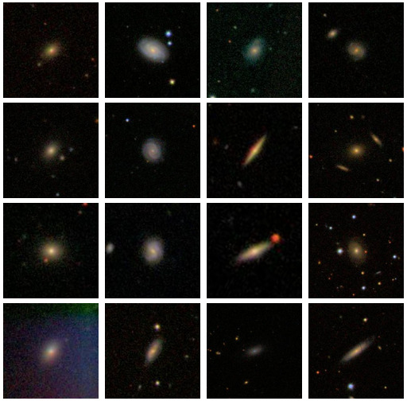
Color distribution
We’ll use HSV space:
Hue is circular (think rainbow)Saturation is white -> colorfulValue is black -> colorful
Set-up
- get the zip file
By pixel
Let’s compare color values in the center to values near the edge:
def get_pixel(filenames, i, j):
out = pd.DataFrame(
np.array([Image.open(fn).convert("HSV").getpixel((i, j)) for fn in filenames]),
columns=("H", "S", "V"),
)
return out
pix0 = get_pixel(filenames, 212, 212)
pix1 = get_pixel(filenames, 0, 212)Value
p9.ggplot(pix0, p9.aes(x='V')) + p9.geom_histogram(bins=32) | p9.ggplot(pix1, p9.aes(x="V")) + p9.geom_histogram(bins=32)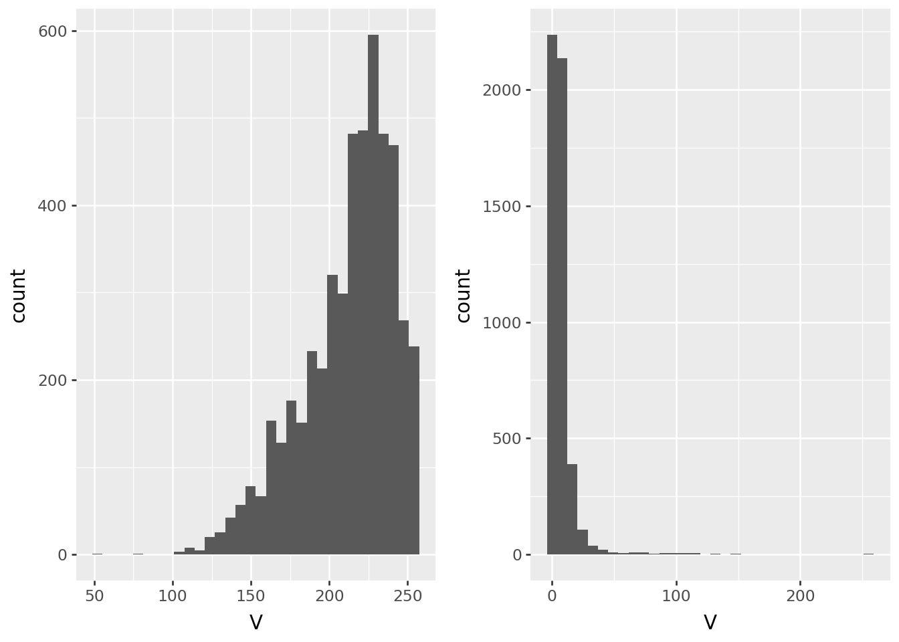
Saturation
p9.ggplot(pix0, p9.aes(x='S')) + p9.geom_histogram(bins=32) | p9.ggplot(pix1, p9.aes(x="S")) + p9.geom_histogram(bins=32)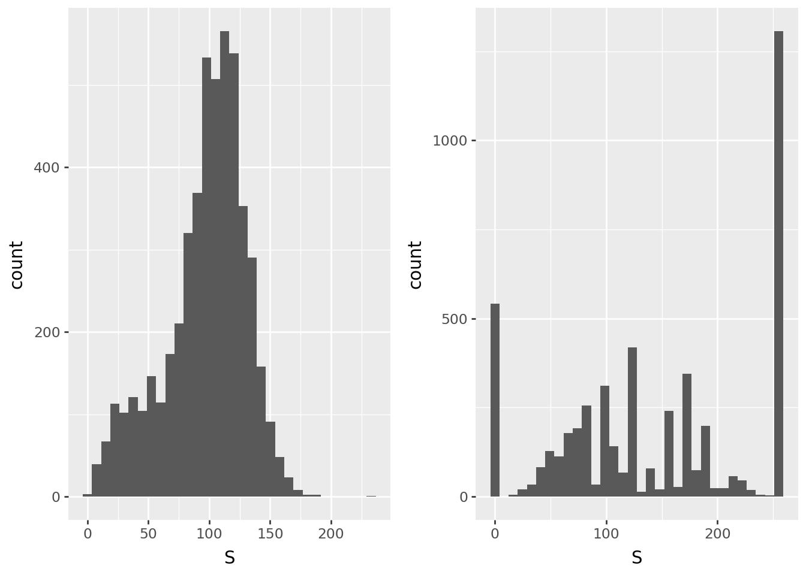
Hue
p9.ggplot(pix0, p9.aes(x='H')) + p9.geom_histogram(bins=32) | p9.ggplot(pix1, p9.aes(x="H")) + p9.geom_histogram(bins=32)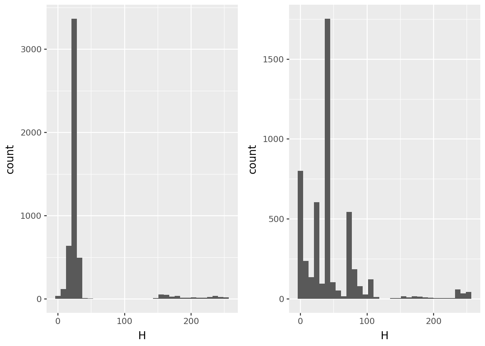
Image-wide averages
Next, the average value across the image:
RGB = pd.DataFrame(
np.array([np.asarray(Image.open(fn)).mean(axis=(0,1)) for fn in filenames]),
columns=("R", "G", "B"),
)
HSV = pd.DataFrame(
np.array([np.asarray(Image.open(fn).convert("HSV")).mean(axis=(0,1)) for fn in filenames]),
columns=("H", "S", "V"),
)
colors = pd.concat([RGB, HSV], axis=1)p9.ggplot(colors, p9.aes(x="R", y="G", color='B')) + p9.geom_point() + p9.scale_color_continuous('Blues')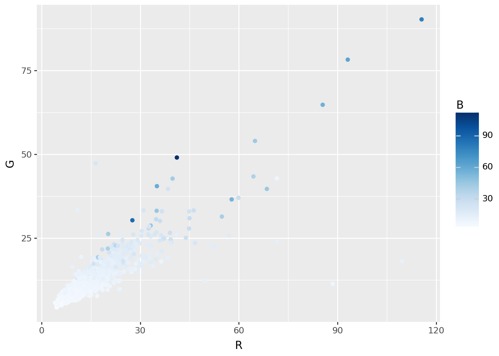
Extremes
def plot_extremes(filenames, x, n=3):
fig, axes = plt.subplots(2, n)
ix = np.argsort(x)
for ax, k in zip(axes[0], ix[:n]):
ax.imshow(Image.open(filenames[k]))
ax.set_title(f"{k}: {x[k]:.2f}")
ax.set_axis_off()
for ax, k in zip(axes[1], ix[-n:]):
ax.imshow(Image.open(filenames[k]))
ax.set_title(f"{k}: {x[k]:.2f}")
ax.set_axis_off();Most blue:
plot_extremes(filenames, colors['B'])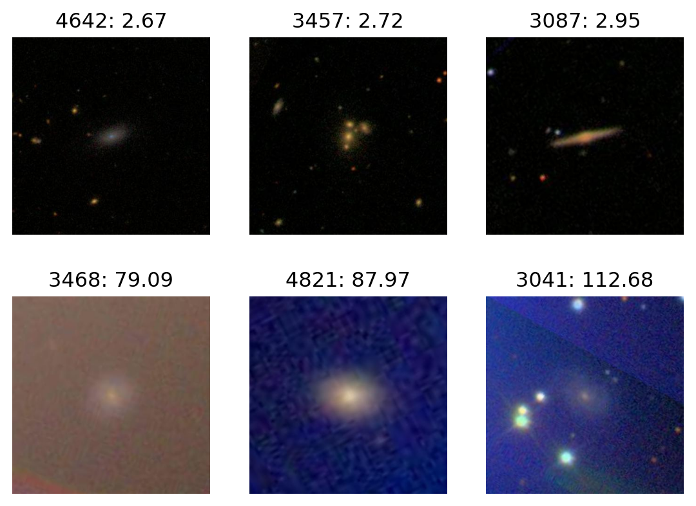
Most red:
plot_extremes(filenames, colors['R'])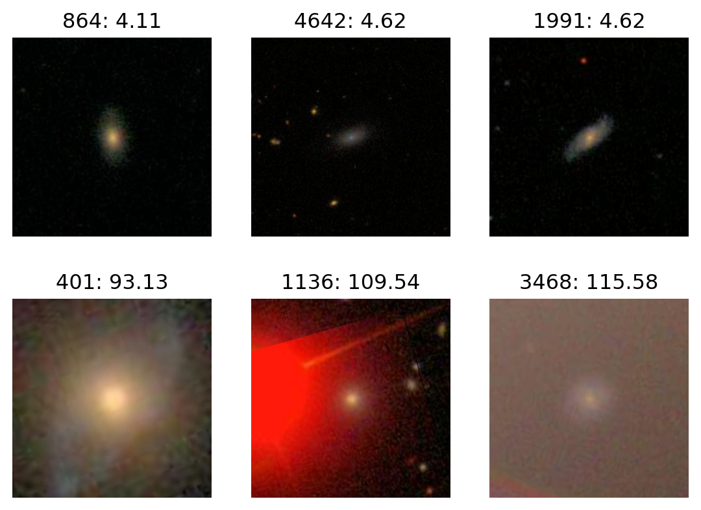
Image-wide average, in HSV
p9.ggplot(colors, p9.aes(x="H", y="V", color='S')) + p9.geom_point() + p9.scale_color_continuous('gray')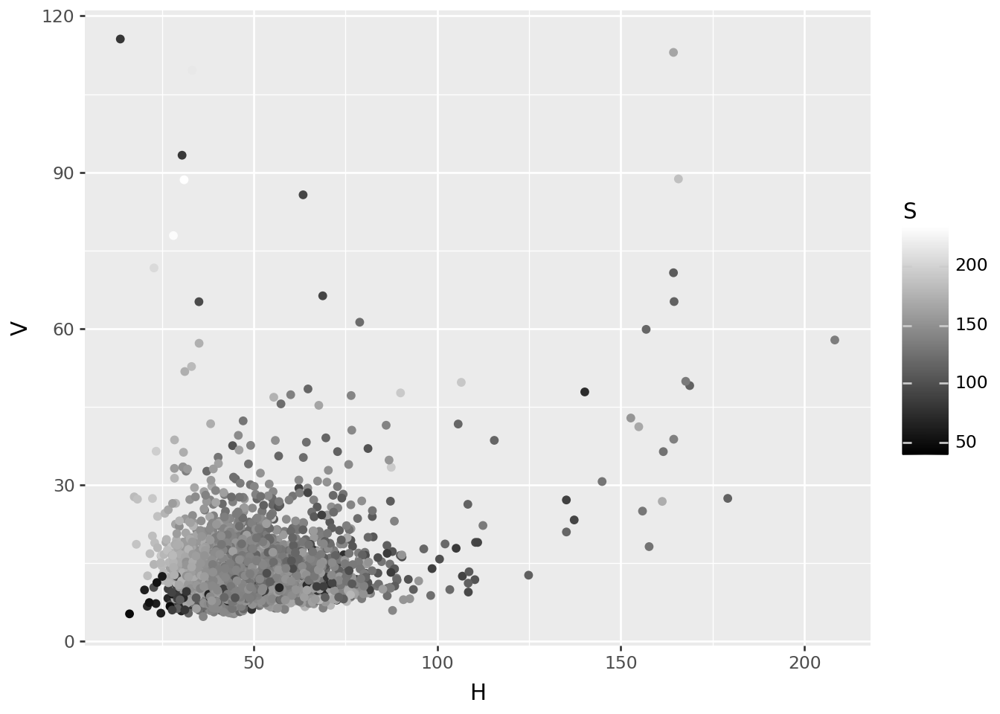
Most V
plot_extremes(filenames, colors['V'])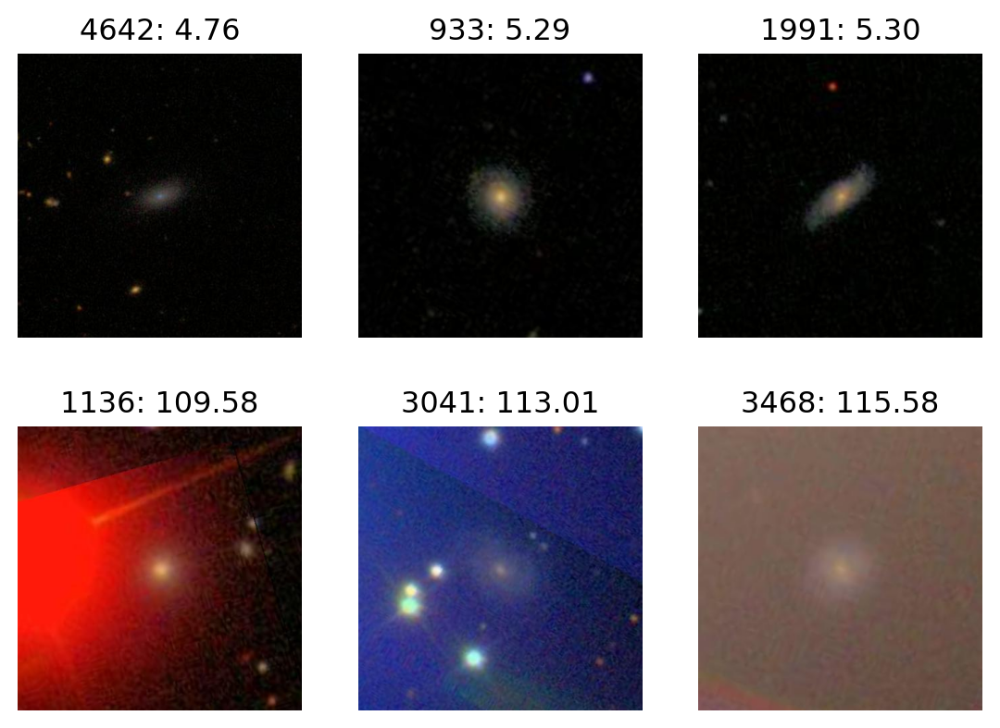
Most H
plot_extremes(filenames, colors['H'])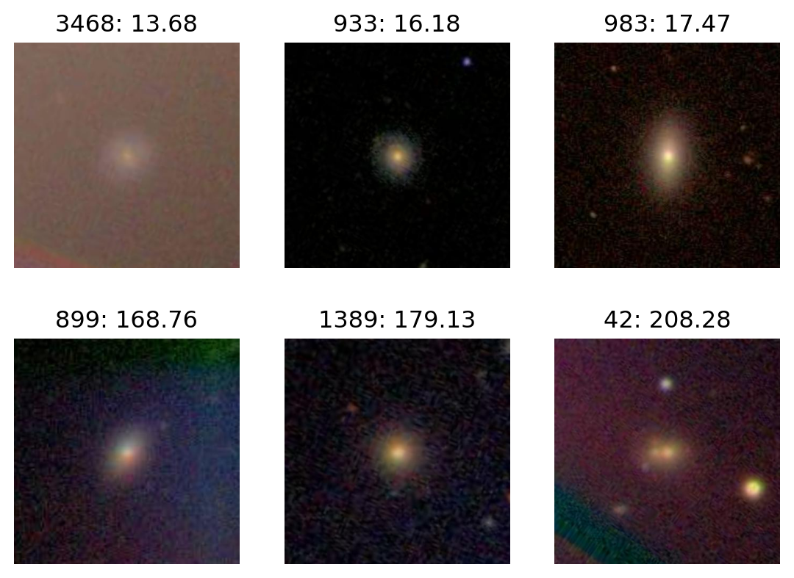
PCA, in RGB space
def im_to_array(fn, size):
im = Image.open(fn).resize(size=size)
return np.array([np.asarray(x) for x in im.split()]).flatten()
def images_to_array(filenames, size):
return np.array([im_to_array(fn, size=size) for fn in filenames])
size = (100, 110)
X = images_to_array(filenames, size=size).astype("float")
X -= X.mean(axis=1)[:,np.newaxis]
X.shape(5000, 33000)pca = sklearn.decomposition.PCA(n_components=12).fit(X)
pcs = pd.DataFrame(
pca.transform(X), columns=[f"PC{k+1}" for k in range(pca.n_components_)]
)
ij = pd.Series([f"{x}.{i}.{j}" for x in ('r', 'g', 'b') for i in range(size[0]) for j in range(size[1])])
loadings = pd.concat([
pd.DataFrame(pca.components_.T, index=ij, columns=[f"PC{k+1}" for k in range(pca.n_components_)])
.reset_index(names='variable'),
pd.DataFrame.from_records(ij.str.split("."), columns=('rgb', 'row', 'col')),
], axis=1)
loadings['row'] = loadings['row'].astype('int')
loadings['col'] = loadings['col'].astype('int')
loadings| variable | PC1 | PC2 | PC3 | PC4 | PC5 | PC6 | PC7 | PC8 | PC9 | PC10 | PC11 | PC12 | rgb | row | col | |
|---|---|---|---|---|---|---|---|---|---|---|---|---|---|---|---|---|
| 0 | r.0.0 | -0.002556 | -0.000460 | 0.000462 | -0.006387 | -0.002465 | 0.001673 | 0.007242 | -0.000868 | 0.001055 | 0.005432 | 0.010187 | -0.001327 | r | 0 | 0 |
| 1 | r.0.1 | -0.002568 | -0.000415 | 0.000409 | -0.006656 | -0.002117 | 0.001825 | 0.007844 | -0.001226 | 0.001306 | 0.006359 | 0.010463 | -0.002005 | r | 0 | 1 |
| 2 | r.0.2 | -0.002496 | -0.000585 | 0.000376 | -0.006825 | -0.001908 | 0.001726 | 0.008319 | -0.000801 | 0.001367 | 0.006715 | 0.011059 | -0.002117 | r | 0 | 2 |
| 3 | r.0.3 | -0.002542 | -0.000692 | 0.000187 | -0.007098 | -0.002292 | 0.001729 | 0.008218 | -0.000497 | 0.000891 | 0.006882 | 0.011823 | -0.002481 | r | 0 | 3 |
| 4 | r.0.4 | -0.002634 | -0.000789 | -0.000240 | -0.007402 | -0.002236 | 0.001496 | 0.008715 | 0.000083 | 0.000841 | 0.007138 | 0.012801 | -0.002597 | r | 0 | 4 |
| ... | ... | ... | ... | ... | ... | ... | ... | ... | ... | ... | ... | ... | ... | ... | ... | ... |
| 32995 | b.99.105 | -0.002404 | -0.000214 | 0.000206 | 0.004532 | -0.003090 | -0.004303 | 0.001218 | 0.004700 | 0.003450 | 0.000932 | -0.003604 | 0.002391 | b | 99 | 105 |
| 32996 | b.99.106 | -0.002451 | -0.000150 | 0.000306 | 0.004506 | -0.003063 | -0.004476 | 0.001253 | 0.004087 | 0.003394 | 0.001102 | -0.003609 | 0.001687 | b | 99 | 106 |
| 32997 | b.99.107 | -0.002275 | 0.000036 | 0.000373 | 0.004389 | -0.003284 | -0.004167 | 0.001216 | 0.004093 | 0.003440 | 0.001188 | -0.003503 | 0.001381 | b | 99 | 107 |
| 32998 | b.99.108 | -0.002260 | 0.000057 | 0.000450 | 0.003915 | -0.003304 | -0.003941 | 0.000727 | 0.004434 | 0.003355 | 0.000867 | -0.003392 | 0.001677 | b | 99 | 108 |
| 32999 | b.99.109 | -0.002334 | 0.000013 | 0.000459 | 0.003671 | -0.003350 | -0.003447 | 0.000463 | 0.003925 | 0.003687 | 0.000608 | -0.003066 | 0.001869 | b | 99 | 109 |
33000 rows × 16 columns
What are the loadings?
(
loadings
>>
p9.ggplot(p9.aes(x='row', y='PC1', color='factor(col)'))
+ p9.geom_line()
+ p9.facet_grid(rows='rgb')
+ p9.scale_color_discrete(guide=None)
) + p9.theme(figure_size=(12,12))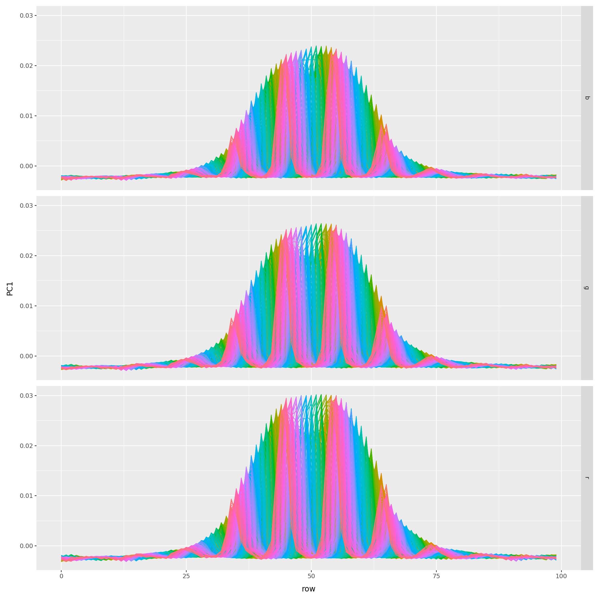
(
loadings
.query("col.isin((0, 24, 49, 74, 99))")
>>
p9.ggplot(p9.aes(x='row', y='PC1', color='factor(col)'))
+ p9.geom_line()
+ p9.facet_grid(rows='rgb')
+ p9.scale_color_discrete(guide=None)
) + p9.theme(figure_size=(12,12))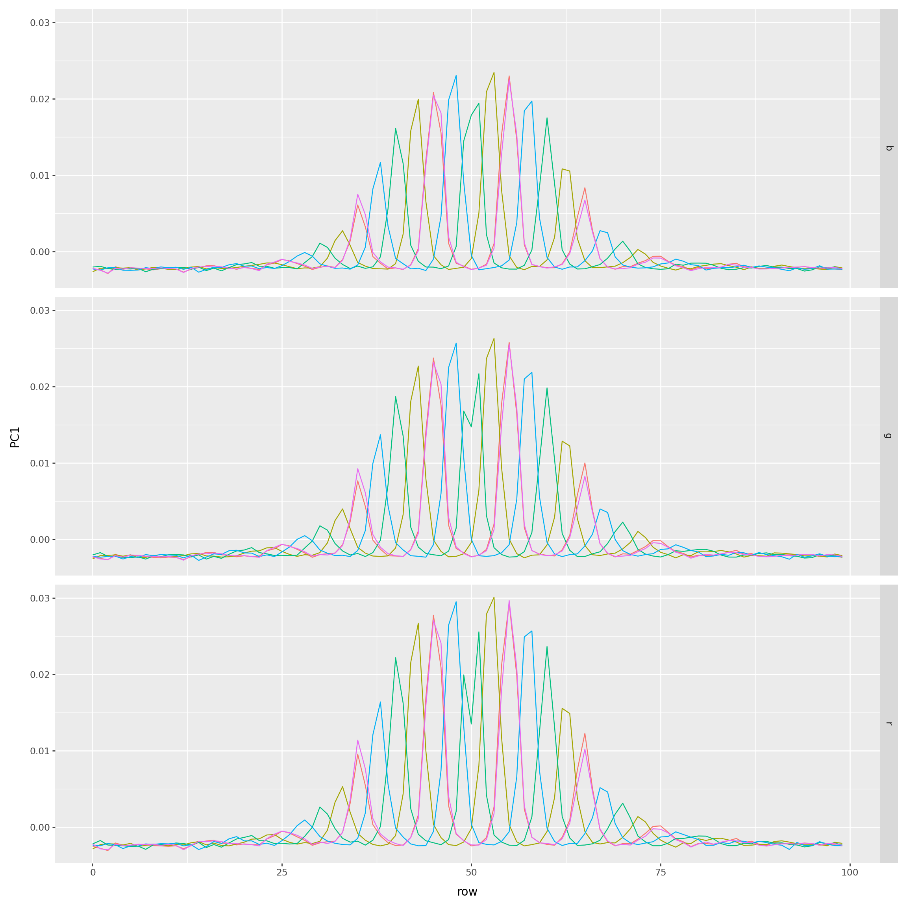
Another way to look at the loadings
def get_pc_image(loadings, k):
pc_im = np.array([
loadings.query(f"rgb == '{x}'")[f'PC{k}'].values.reshape((size[1], size[0]))
for x in "rgb"
])
pc_im -= pc_im.min()
pc_im *= 255 / (pc_im.max() - pc_im.min())
pc_im = pc_im.astype("int")
return np.moveaxis(pc_im, [0,1,2], [2,1,0])PCs 1-3
fig, axes = plt.subplots(1, 3, figsize=(15, 4))
for k, ax in zip(range(1,4), axes):
ax.imshow(get_pc_image(loadings, k))
ax.set_title(f"PC{k}");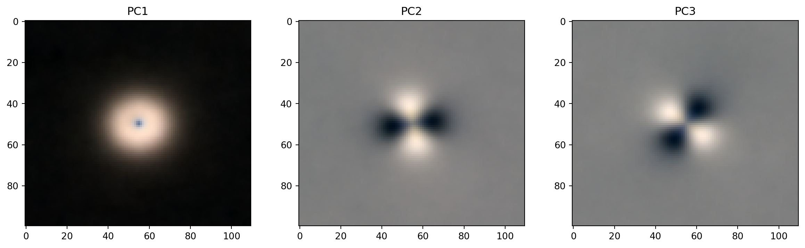
PCs 4-6
fig, axes = plt.subplots(1, 3, figsize=(15, 4))
for k, ax in zip(range(4,7), axes):
ax.imshow(get_pc_image(loadings, k))
ax.set_title(f"PC{k}");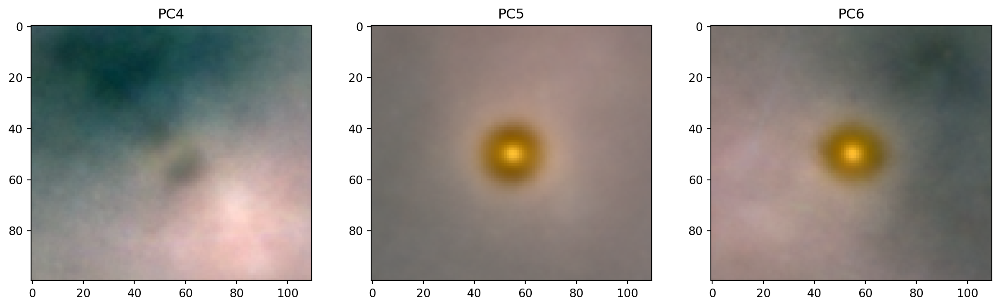
PC1
plot_extremes(filenames, pcs['PC1'])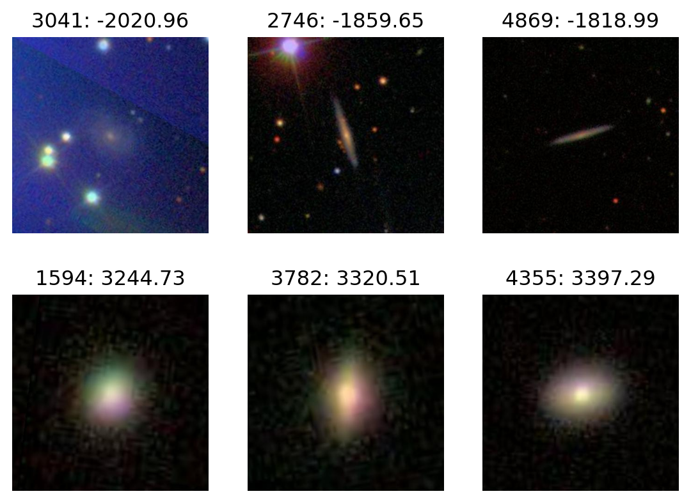
PC2
plot_extremes(filenames, pcs['PC2'])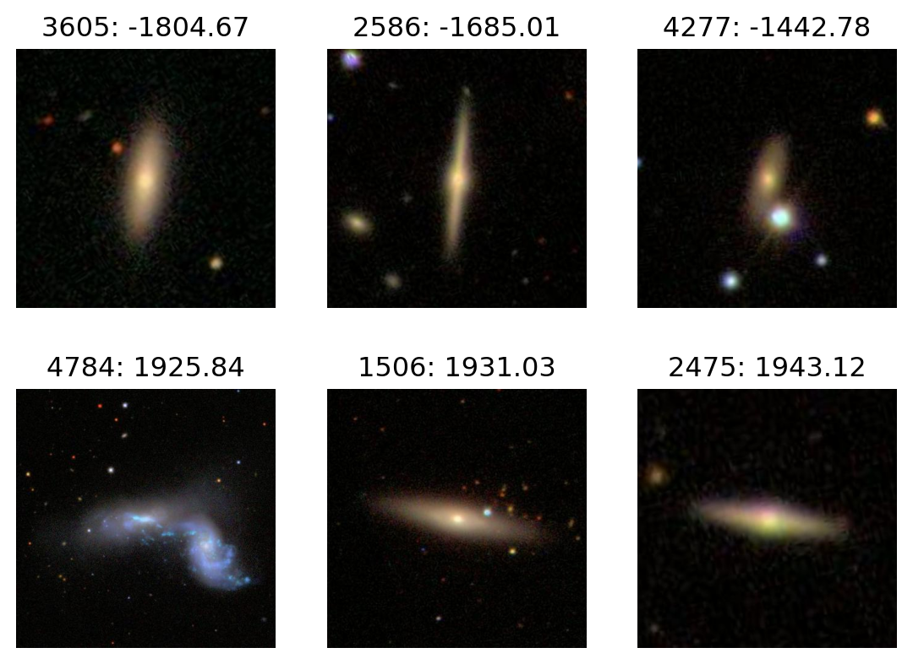
PC3
plot_extremes(filenames, pcs['PC3'])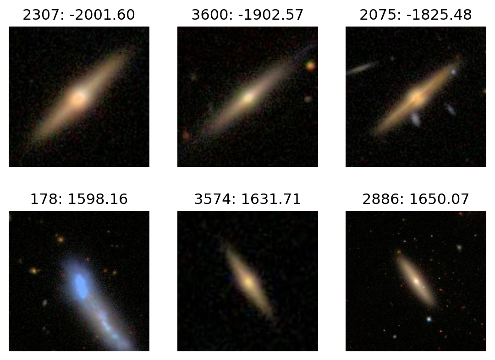
PC4
plot_extremes(filenames, pcs['PC4'])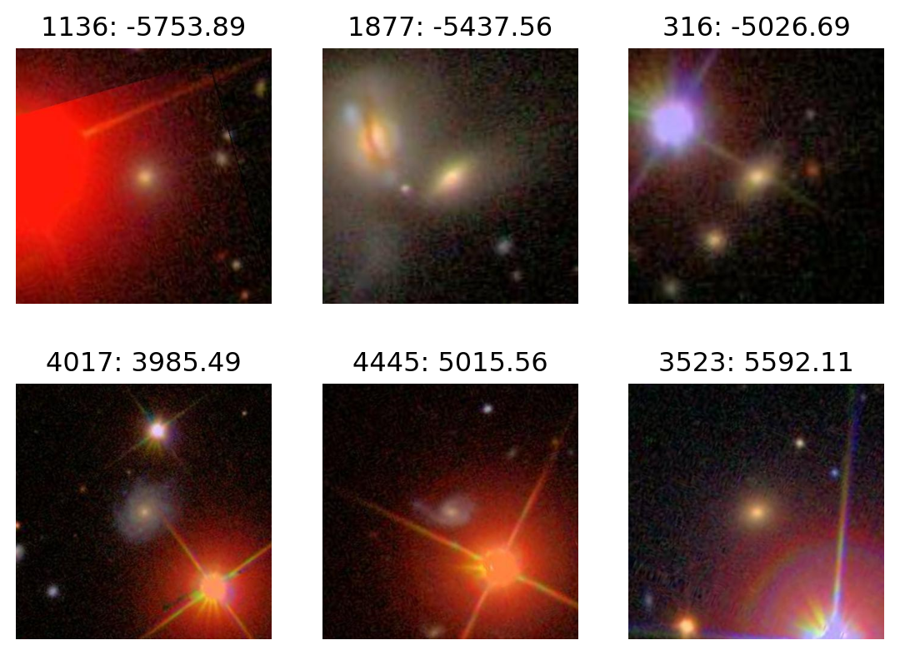